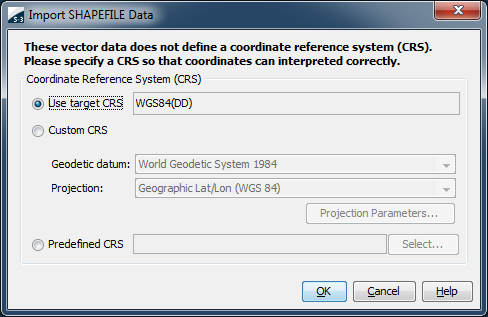
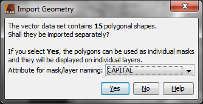
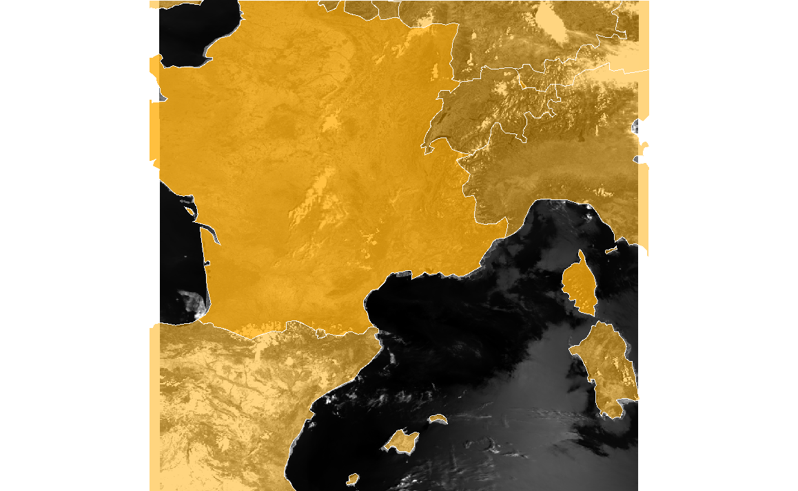

| Import ESRI Shapefile | |
When importing an ESRI Shapefile and no associated *.prj is found, you will be asked to define the Coordinate Reference System (CRS) on which is coordinates of the shapefile are defined.

You can choose between three options to define the CRS:
After the CRS of the shape data has been selected and confirmed with 'OK', a new dialog 'Import Geometry' is shown in case if the shapefile contains more than one single geometry. It can now be selected if these geometries shall be imported separately or as a whole. Also, the attribute for the mask/layer naming can be selected from a drop-down box.

Example: 'World Countries' shapes: all geometries (countries) imported as a whole:

Example: 'World Countries' shapes: geometries (countries) imported separately: